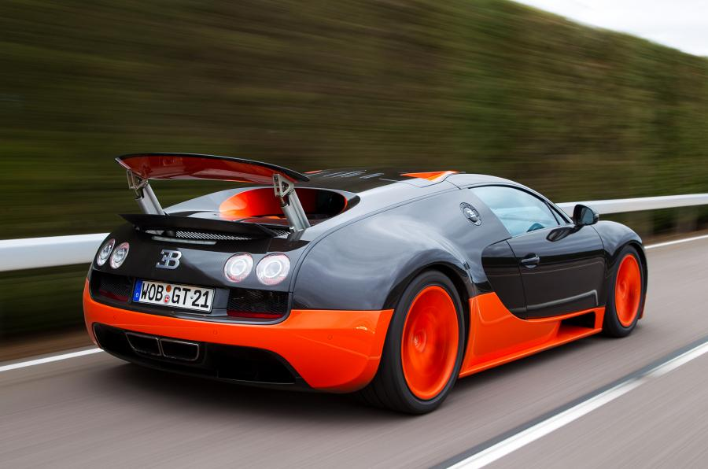
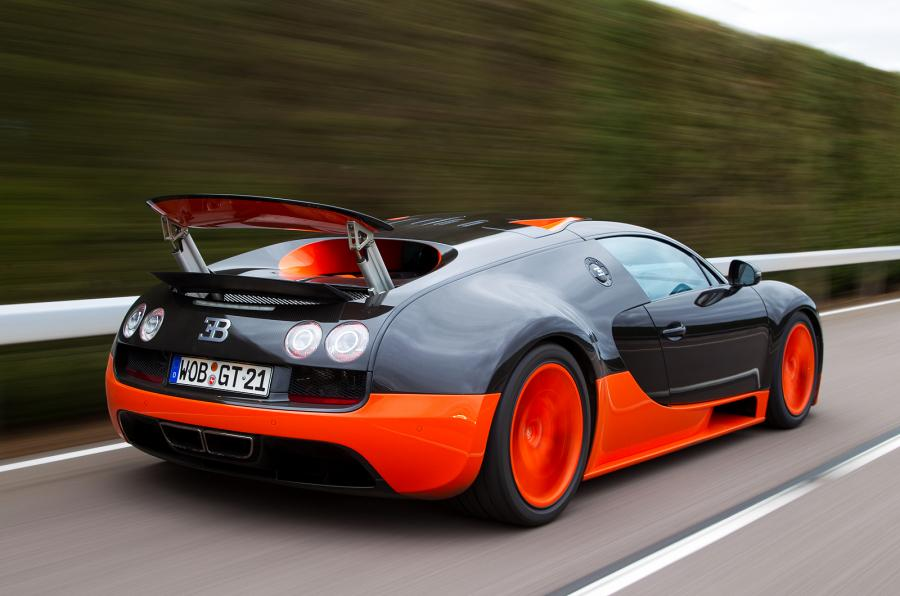
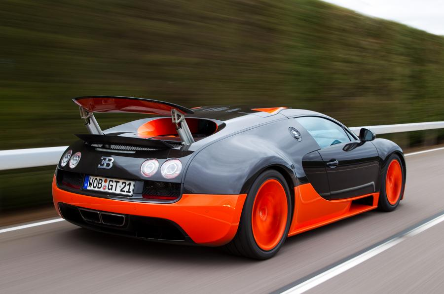

The original version has a top speed of 407 km/h
(253 mph). It was named Car of the Decade and best car award (2000–2009)
by the BBC television programme Top Gear. The standard Bugatti
Veyron also won Top Gear's Best Car Driven All Year award in 2005.
The Super Sport version of the Veyron is recognised by Guinness
World Records as the fastest street-legal production car in the w
orld, with a top speed of 430.9 km/h (267.7 mph).
The Veyron's chief designer was Hartmut Warkuss, and the exterior was
designed by Jozef Kabaň of Volkswagen, with much of the engineering
work being conducted under the guidance of engineering chief Wolfgang
Schreiber.
Several special variants have been produced. In December 2010, Bugatti
began offering prospective buyers the ability to customise exterior
and interior colours by using the Veyron 16.4 Configurator application on
the marque's official website. The Bugatti Veyron was discontinued in late 2014.
Click here to go back to the main page.
